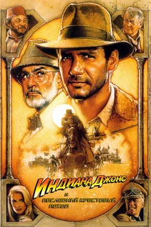

Индиана Джонс и последний крестовый поход

8.1
Обзор
На этот раз бесстрашный Индиана разыскивает самую таинственную
реликвию в истории человечества — Святой Грааль. В этом археологу
помогает его отец, профессор Джонс старший. Теперь под бдительным оком
своего отца Индиане предстоит совершить много благородных подвигов и
потрясающих открытий. В новых странствиях храброму археологу доведется
добыть чашу, которую держал в руках Иисус Христос и получить автограф…
самого Адольфа Гитлера.